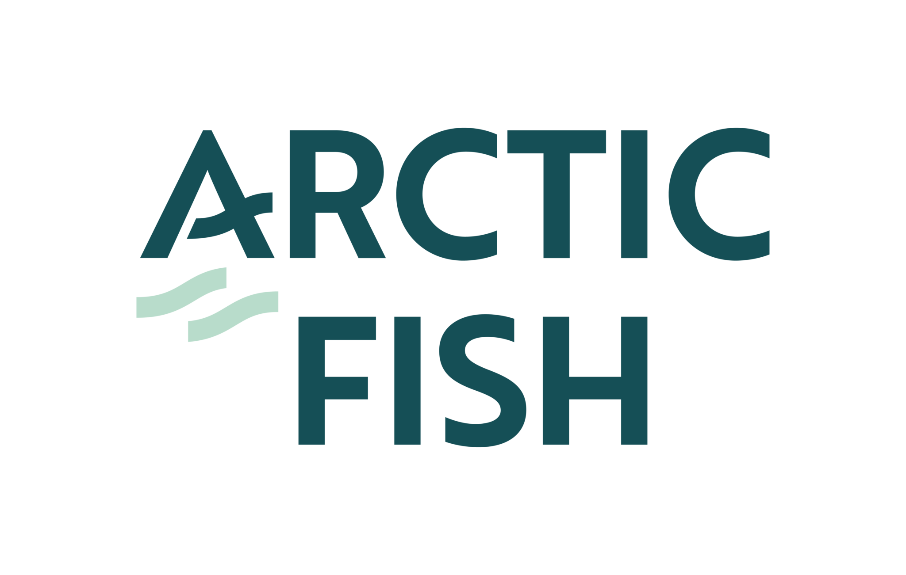

Ranglister Forbrug: fødevarer, drikke & restauranter Arctic Fish Holdings

Arctic Fish Holdings
Et blik på de samme fund, ikke en ny score. Sådan virker det
Kort fortalt
Arctic Fish får 34 point af 100, fordi selskabet taber penge og har flere alvorlige problemer. Driften dækker ikke renterne, gælden er 143 mio. euro, og nye aktier har udvandet ejerne. Aktien er billig i forhold til egen historik, og storejeren Mowi, verdens største lakseopdrætter, står for salget. Hold øje med den uafklarede islandske lov, som har sat nye investeringer i bero.
Modellen fandt flere alvorlige problemer. Det betyder ikke, at aktien vil falde.
Største fradrag
- Multipler mod egen historik og peers−14
- Margin−8
- Gæld−7
Styrker
- Estimater+1
- Stærk hovedaktionær+1
Sådan er scoren bygget op
Fra 100 til 37, trin for trin: point trækkes fra for forretningen, prisen og revnerne, lægges til for dokumenterede styrker, og så følger tre datajusteringer.
Hold musen over et trin eller vælg det for at se, hvad der drev det. Trin med fund åbner dem nedenfor.
Nøgletal
Pr. 6 nov. 2026. Analytikernes kursmål er ofte optimistiske; læs opsiden som et fingerpeg, ikke en prognose.
- Pris
- 21.20 NOK
- Analytikernes mediankursmål
- 36.50 NOK
- Opside til median
- +72.2%
- Analytikere
- 2
- Kursmålsinterval
- 23.00 – 50.00 NOK
- 52-ugers ændring
- −33%
- P/E (historisk)
- n/a
- Forward P/E
- 17.7
- PEG
- n/a
Fund
Hvert fradrag og hvert plus med sin kilde. Åbn et trin for at læse dem.
Forretning
Bliver virksomheden stærkere, ikke bare større? · 4 fund−16 af −30
- −8MarginDriftsmargin −5,9 %, nettomargin −15,1 % og EBITDA-margin 1,7 % TTM (driftsresultat −7,5 mio. €, nettoresultat −19,0 mio. €). Q2 2026 gav operationel EBIT på −3,1 mio. €, dvs. −0,56 € pr. kg. Underskuddet tælles her og ikke igen under ROIC.
- −3VoldgravLaks er en råvare, så markedet sætter prisen. Licenserne (MAB 29.800 t i fem vestfjorde) er begrænsede, men beskattes 3–4 gange hårdere end i Norge, så de giver ingen reel prisfordel.
- −3Vækstens kvalitetQ2-omsætningen steg fra 12,6 til 32,5 mio. € udelukkende på høstvolumen (5.595 t mod 2.020 t), med lav prisopnåelse og hårdt vejr. Der er ingen marginforbedring pr. kg, der viser skalafordele.
- −2KapitalallokeringFCF har været negativ hvert år 2021–25 (samlet ca. −102 mio. €), finansieret af gæld (35,8 → 150,5 mio. €) og nye aktier. ROIC er faldet fra 11,6 % (2021) til −4,8 %, så kapitalen er endnu ikke forrentet.
Pris
Dagens multipler mod selskabets egen historik og dets sammenlignelige selskaber. · 1 fund−14 af −35
- −14Multipler mod egen historik og peersP/B 1,23 mod 1,24–3,05 i 2021–25 og EV/Sales 1,92 mod 2,83–6,42, altså lavest i historikken. Men EV/EBITDA er 104, der er ingen positiv indtjening, og nettogælden (ca. 1,6 mia. kr.) er større end markedsværdien (1,1 mia. kr.). Forward P/E 17,5 hviler på én til to analytikere.
Revner
Cash flow, kunder, gæld, insidere, guidance og det, der ligger bag hovedtallene. · 6 fund−30 af −35
- −7GældNettorentebærende gæld er 143 mio. € (ekskl. IFRS 16). Nettogæld/egenkapital er steget fra 0,35 (2021) til 1,79, og rentedækningen er −0,74x, så driften dækker ikke renterne.
- −5Udvanding13,1 mio. nye aktier i september 2025 (aktietallet +41 %, i gennemsnit +27 % på årsbasis), som viser et løbende finansieringsbehov.
- −6Regulering og skatDen islandske opdrætsafgift er 41,66 ISK/kg i 2026, 3–4 gange den norske. Den nye akvakulturlov (fremlagt i marts 2026) er uafklaret og lægger op til skærpede miljø- og tilsynskrav. Arctic Fish har derfor sat nye ekspansionsinvesteringer i bero (21/8-2026).
- −4Biologi og driftMassedødelighed i 2022 (1.500–2.000 t) og rømning af ca. 3.500 laks i Patreksfjörður i august 2023, som MAST bad om officiel efterforskning af. Den biologiske risiko er gentaget.
- −5MakroStigende foderpriser, en stærk NOK og sænkede lakseprisprognoser presser prisopnåelsen.
- −3Governance og likviditetMowi ejer flertallet og har overtaget salget (nærtstående part). Free float er kun 17,6 mio. aktier med ca. 800 handlede aktier om dagen, så minoritetsaktionærerne har ringe indflydelse og en illikvid aktie.
Plus
Kun dokumenterede styrker. · 2 fund+2 af +15
- +1EstimaterHøstguidance for 2026 er hævet til 18.000 t (+22 %) efter rekordkvartal; H1-høst 11.624 t.
- +1Stærk hovedaktionærMowi, verdens største lakseopdrætter, er majoritetsejer og står for salg og knowhow, hvilket mindsker finansierings- og salgsrisikoen.
Forbehold
Det, scoren ikke fanger, eller hvor dataene er svage.
Også i Forbrug: fødevarer, drikke & restauranter
De højeste scorer i samme branche.